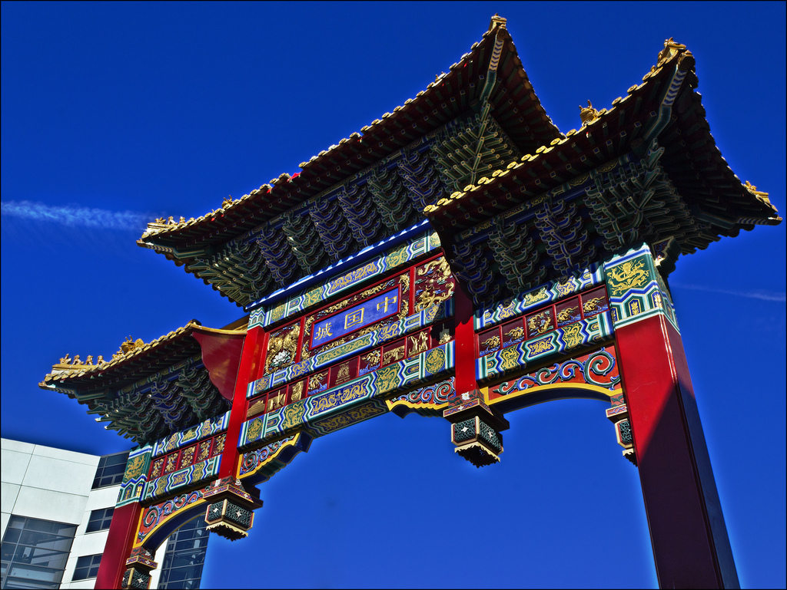

Newcastle is one of only 5 cities in the UK to have a Chinatown. The first Chinese restaurant in Newcastle opened in 1949. The Chinese community in Tyne and Wear rapidly grew in the 1960s,
though the first Chinese business didn't move to Stowell Street until 1978. Many others followed suit, and in 1988 the street signs became bilingual - by which point the area had become
one of the most characterful and distinct in Newcastle. The Chinese Arch was built in 2004 on St Andrew's Street and stands 11 metres tall, costing £475,000.
Chinatown is a good shortcut to The Gate, Bigg Market, and Central station. Of course, there's many takeaways and restaurants here, as well as Chinese supermarkets.